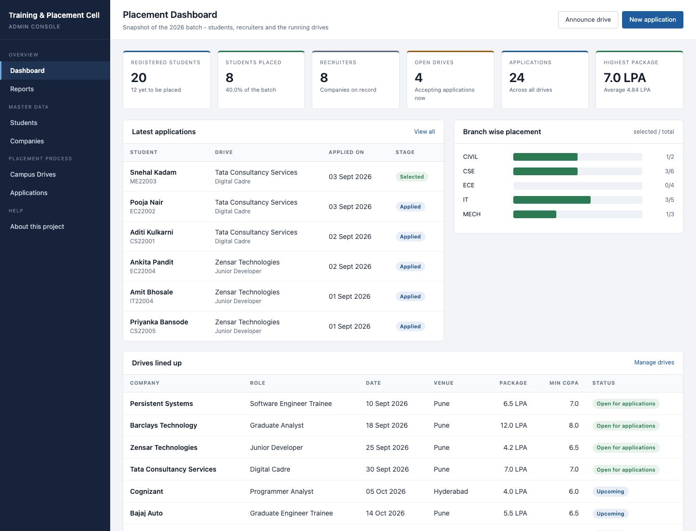
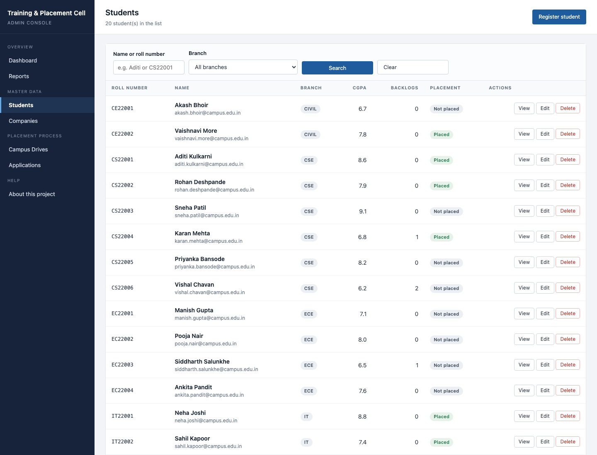
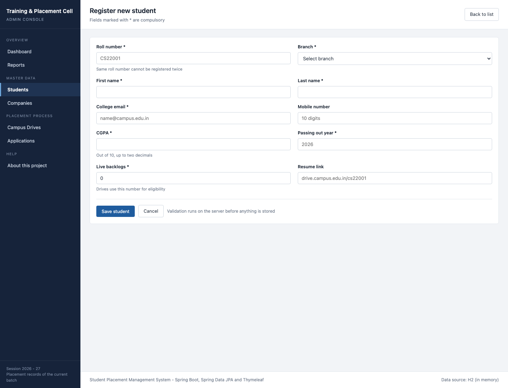
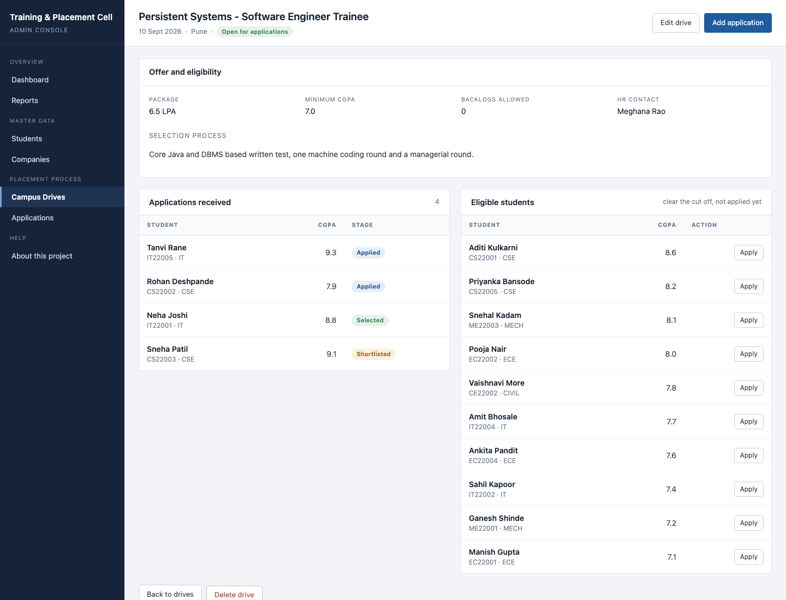
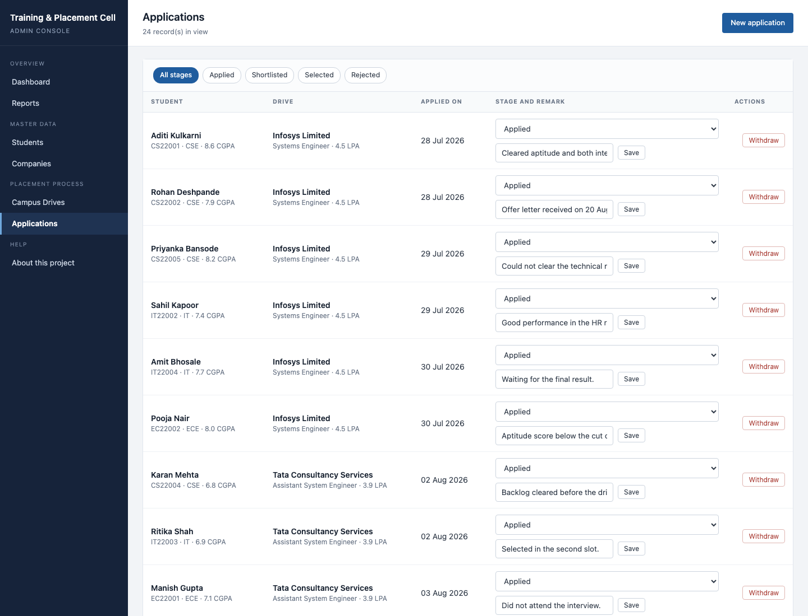
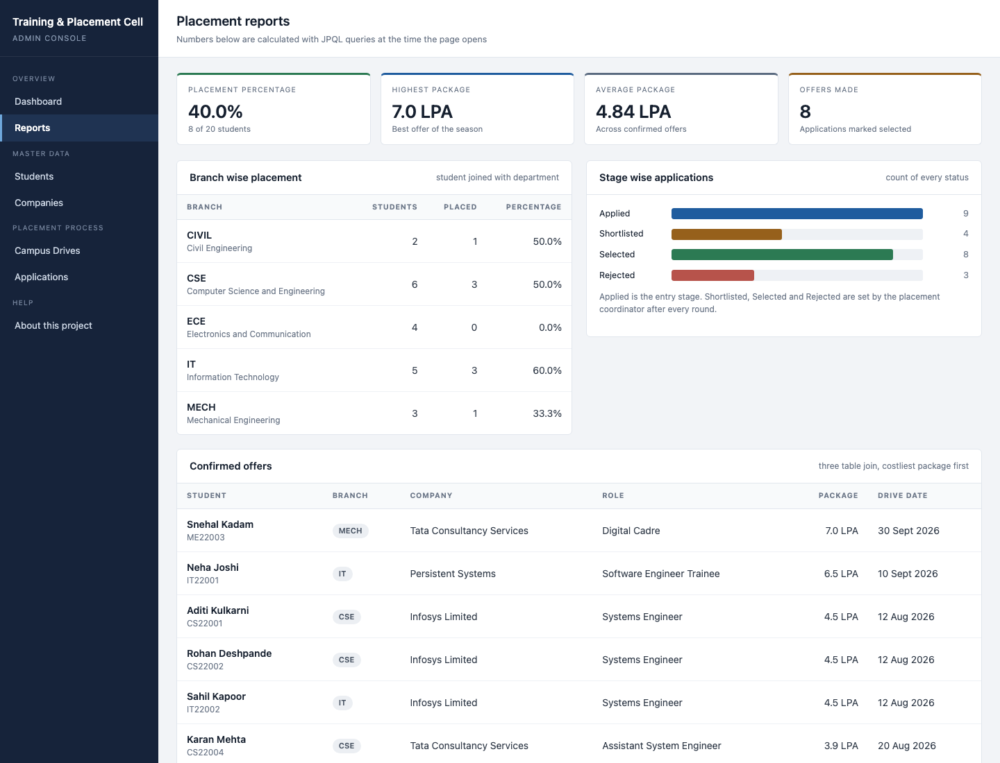

A web portal that replaces the registers of a college placement cell - student records, visiting recruiters, campus drives, applications and the final placement report.
| Modules | Students, Companies, Drives, Applications, Reports |
| Java classes | 26 (entity, repository, service, controller, DTO, exception) |
| Pages | 16 Thymeleaf templates, 12 screens |
| Tables | department, company, student, drive, application |
| CRUD | Full create / read / update / delete on 4 entities |
| Tests | 5 JUnit tests, all passing |
| Role | Responsibility |
|---|---|
| Placement Officer | Master data - students, recruiters, drives; opens and closes a drive |
| Placement Coordinator | Enters applications, updates the interview stage and remarks |
| Student (future scope) | Read only view of own profile and eligible drives |
BROWSER (placement officer)
| HTTP GET / POST form
v
+--------------------------------------------+
| PRESENTATION - Thymeleaf templates, CSS |
+--------------------------------------------+
| model attributes ^ HTML
v |
+--------------------------------------------+
| CONTROLLER @Controller |
| reads the form, runs @Valid, picks a page |
+--------------------------------------------+
| one service call
v
+--------------------------------------------+
| SERVICE @Service @Transactional |
| college rules: duplicate, eligibility |
+--------------------------------------------+
| repository method
v
+--------------------------------------------+
| REPOSITORY Spring Data JPA interfaces |
| derived queries + JPQL -> SQL by Hibernate |
+--------------------------------------------+
| JDBC
v
+--------------------------------------------+
| DATABASE 5 tables |
+--------------------------------------------+
POST /students/save
1 StringToDepartmentConverter: "1" -> Department
2 @Valid checks the Student annotations
errors -> back to students/form with messages
3 StudentService.create()
checkRollNumberIsFree()
checkEmailIsFree()
studentRepository.save()
4 Hibernate: insert into student (...) values (...)
5 flash message + redirect to /students/{id}
(redirect after POST, so refresh cannot
insert the same student twice)
+---------------------------+
| 1. REQUIREMENT GATHERING | what the cell records today
+------------+--------------+
v
+---------------------------+
| 2. SYSTEM DESIGN | ER in 3NF, layers, pages
+------------+--------------+
v
+---------------------------+
| 3. IMPLEMENTATION | module by module
+------------+--------------+
v
+---------------------------+
| 4. TESTING | JUnit + manual
+------------+--------------+
v
+---------------------------+
| 5. DEPLOYMENT | runnable jar
+------------+--------------+
v
+---------------------------+
| 6. MAINTENANCE | docs, data
+---------------------------+
| Phase | Deliverable |
|---|---|
| Requirement | Module list, actors, 12 screens, report list |
| Design | 5 table ER design in 3NF, layered packages, URL plan |
| Implementation | 26 Java classes, 16 templates - student, company, drive, application, reports |
| Testing | 5 JUnit tests + manual test of every CRUD path |
| Deployment | mvn clean package → placement-portal.jar with embedded Tomcat |
| Maintenance | Sample data, documentation, screenshots, future scope |
| Member | Owned work |
|---|---|
| 1 | Database design, entities, repositories |
| 2 | Service layer rules, exceptions, JUnit tests |
| 3 | Controllers, form binding, validation |
| 4 | Thymeleaf pages, CSS, documentation |
@Entity
@Table(name = "student", uniqueConstraints = {
@UniqueConstraint(name = "uk_student_roll",
columnNames = "roll_number") })
public class Student {
@Id
@GeneratedValue(strategy = GenerationType.IDENTITY)
private Long id;
@NotBlank(message = "Roll number is required")
@Column(name = "roll_number", nullable = false)
private String rollNumber;
@NotNull @DecimalMax(value = "10.0",
message = "CGPA cannot be more than 10")
private Double cgpa;
// many students belong to one branch
@ManyToOne(optional = false)
@JoinColumn(name = "department_id", nullable = false)
private Department department;
@OneToMany(mappedBy = "student",
cascade = CascadeType.ALL,
orphanRemoval = true)
private List<Application> applications = new ArrayList<>();
public interface StudentRepository
extends JpaRepository<Student, Long> {
// method name itself becomes the where clause
boolean existsByRollNumberIgnoreCase(String roll);
List<Student> findAllByOrderByRollNumberAsc();
// students who clear the cut off of a drive
// and have not applied to it yet
@Query("""
select s from Student s
where s.cgpa >= :minCgpa
and s.backlogs <= :maxBacklogs
and s.id not in (select a.student.id
from Application a
where a.drive.id = :driveId)
order by s.cgpa desc
""")
List<Student> findEligibleStudents(
@Param("minCgpa") Double minCgpa,
@Param("maxBacklogs") Integer maxBacklogs,
@Param("driveId") Long driveId);
}
@Service
@Transactional(readOnly = true)
public class ApplicationService {
@Transactional
public Application create(Long studentId, Long driveId,
LocalDate appliedOn, String remarks) {
Student student = studentService.getById(studentId);
Drive drive = driveService.getById(driveId);
checkNotAlreadyApplied(studentId, driveId);
checkEligibility(student, drive);
...
}
private void checkEligibility(Student s, Drive d) {
if (!d.isAcceptingApplications())
throw new EligibilityNotMetException(...);
if (s.getCgpa() < d.getMinCgpa())
throw new EligibilityNotMetException(...);
if (s.getBacklogs() > d.getMaxBacklogs())
throw new EligibilityNotMetException(...);
}
}
@PostMapping("/save")
public String saveStudent(
@Valid @ModelAttribute("student") Student student,
BindingResult bindingResult, Model model,
RedirectAttributes redirectAttributes) {
boolean isNew = student.getId() == null;
if (bindingResult.hasErrors()) return "students/form";
try {
Student saved = isNew
? studentService.create(student)
: studentService.update(student.getId(), student);
redirectAttributes.addFlashAttribute("successMessage", ...);
return "redirect:/students/" + saved.getId();
} catch (BusinessRuleException e) {
model.addAttribute("errorMessage", e.getMessage());
return "students/form";
}
}
<form method="post" th:action="@{/students/save}"
th:object="${student}">
<input type="text" th:field="*{rollNumber}">
<span class="field-error"
th:if="${#fields.hasErrors('rollNumber')}"
th:errors="*{rollNumber}"></span>
</form>
| Item | Convention | Example |
|---|---|---|
| Class | PascalCase, noun | ApplicationService |
| Method | camelCase, verb | findEligibleStudents() |
| Constant | UPPER_SNAKE | DISPLAY_DATE |
| Table / column | snake_case | roll_number |
| Package | lower case, by layer | com.college.placement.service |
| URL | same pattern per module | /students/{id}/edit |
@Autowired.@Transactional(readOnly = true) on the class, write methods override it.@Valid:
compulsory fields, valid email, phone exactly 10 digits, CGPA 0 to 10,
batch year 2015 to 2035, backlogs not negative.
@ControllerAdvice catches ResourceNotFoundException (404),
BusinessRuleException (409) and anything unexpected (500), and shows the
project error page instead of a stack trace.






+-----------------+ +------------------+
| DEPARTMENT | | COMPANY |
| PK id | | PK id |
| name | | name (unique) |
| code (unique)| | industry,city |
| hod_name | | hr_name/email |
+--------+--------+ +--------+---------+
| 1 | 1
| N | N
+--------v--------+ +--------v---------+
| STUDENT | | DRIVE |
| PK id | | PK id |
| roll_number U| | FK company_id |
| first/last | | job_role |
| email U | | package_lpa |
| cgpa | | min_cgpa |
| batch_year | | max_backlogs |
| backlogs | | drive_date |
| FK department_id| | status |
+--------+--------+ +--------+---------+
| 1 +---------------+ | 1
| N | APPLICATION | N |
+------>| PK id |<-----+
| FK student_id |
| FK drive_id |
| applied_on |
| status |
| remarks |
| UNIQUE(student_id, drive_id)
+---------------+
| Between | Type | Meaning |
|---|---|---|
| Student → Department | N : 1 | Many students in one branch |
| Drive → Company | N : 1 | One company, many drives |
| Student ↔ Drive | M : N | Resolved by application |
@ManyToMany - the link itself carries data:
applied_on, status and remarks. A plain many to many
table can only store the two keys.
roll_no, student_name, branch, hod, cgpa, company, hr_name, hr_email, role, package, drive_date, status, remark
student_name split into first_name and last_name.
A student applying to three companies is not stored as company1, company2, company3 -
each application becomes its own row.
With key (roll_no, company): cgpa and branch depend only on
roll_no, while hr_name and hr_email depend only on company.
So the register was split into student, company and drive, each with a
single column key. application keeps only what needs both keys -
applied_on, status, remarks.
roll_no → branch → hod. Branch data moved to the department table and the student
row now stores only department_id.
| Anomaly | Before | After |
|---|---|---|
| Update | HR email of a company repeated in every drive row | One row update in company |
| Insert | A company could not be recorded before it announced a drive | Company row is independent |
| Delete | Deleting the last application lost the company details | Only the link row is deleted |
| Redundancy | Branch name and HOD typed for every student | Stored once, referenced by id |
id on all five tables.roll_number, email, company.name, department.code.student.department_id, drive.company_id,
application.student_id, application.drive_id.(student_id, drive_id) in application.ON DELETE handled by JPA cascade with orphanRemoval = true.SELECT s.roll_number, s.first_name, s.cgpa, d.code FROM student s JOIN department d ON d.id = s.department_id ORDER BY s.roll_number;
SELECT s.roll_number, c.name AS company,
dr.job_role, dr.package_lpa
FROM application a
JOIN student s ON s.id = a.student_id
JOIN drive dr ON dr.id = a.drive_id
JOIN company c ON c.id = dr.company_id
WHERE a.status = 'SELECTED'
ORDER BY dr.package_lpa DESC;
In JPQL the same query uses join fetch, which loads all
four tables in one select instead of one query per row (the N+1 problem).
SELECT d.code,
COUNT(DISTINCT s.id) AS total,
COUNT(DISTINCT CASE WHEN a.status='SELECTED'
THEN s.id END) AS placed
FROM department d
LEFT JOIN student s ON s.department_id = d.id
LEFT JOIN application a ON a.student_id = s.id
GROUP BY d.code ORDER BY d.code;
LEFT JOIN is needed so a branch with zero placements (ECE in the sample data) still shows in the report with 0%.
SELECT s.* FROM student s
WHERE s.cgpa >= 7.0 AND s.backlogs <= 0
AND s.id NOT IN (SELECT a.student_id
FROM application a
WHERE a.drive_id = 3);
COUNT(DISTINCT a.student_id), because a student selected by two companies
must still be counted as one placed student.
| Test | What it proves |
|---|---|
| studentCrudWorks | Insert → read → update → delete, then 404 for the deleted id |
| duplicateRollNumberIsRefused | Repeated roll number is rejected |
| duplicateApplicationIsRejected | Same student cannot apply twice to one drive |
| lowCgpaApplicationIsRejected | 6.2 CGPA student refused for a 7.0 cut off drive |
| placedCountMatchesSelected | Report count equals the SELECTED rows |
Tests run: 5, Failures: 0, Errors: 0
Every CRUD path in all four modules, search and filter, drive status switch, applying from the eligible list, empty form submit, duplicate entry, ineligible application and a wrong URL.